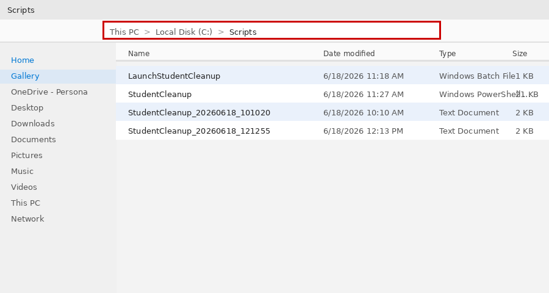
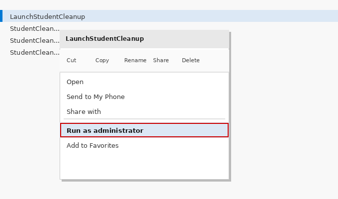
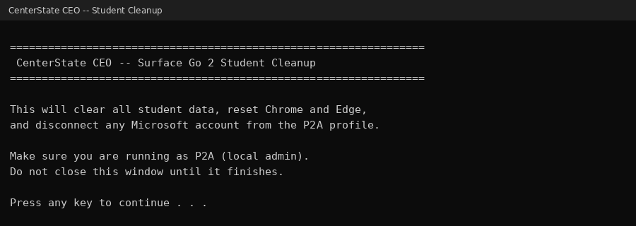

You are done!
The screen will show "Pathways Surface Wipe Complete" and the computer will restart on its own. It will be ready for the next student once it boots back up.
Run this script after every student session to reset the computer for the next student.
How to run it — 3 easy steps



The screen will show "Pathways Surface Wipe Complete" and the computer will restart on its own. It will be ready for the next student once it boots back up.